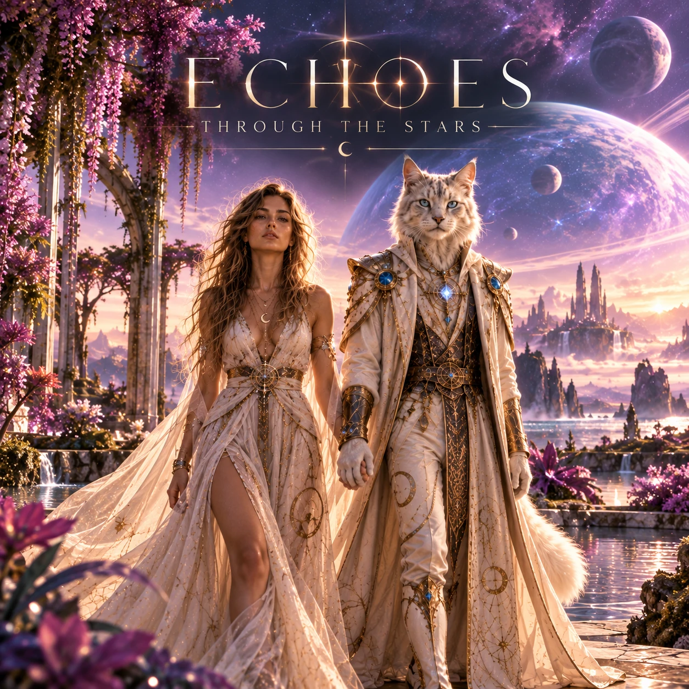

Solo DJ universe
Artemius
Un univers plus brut, plus direct et résolument club : techno dark, acid, trance, tensions hypnotiques et longues constructions pensées pour le dancefloor.

ARTEMIUS / ECHOES THROUGH THE STARS
Mixcloud
DJ sets & sessions
Des sélections orientées club, entre techno, acid, trance et constructions hypnotiques. Artemius développe ici son univers solo, distinct du projet Lea & Artemius.
Club
Puissance
Une sélection pensée pour la tension, la dynamique et le mouvement du dancefloor.
Texture
Underground
Des sonorités sombres, acidulées, hypnotiques et sans compromis commercial.
Construction
Long format
Des sets qui prennent le temps d'installer un voyage plutôt qu'une simple succession de titres.